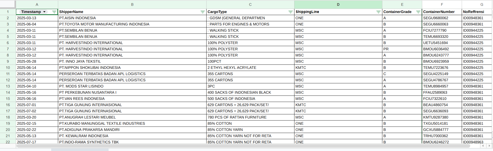
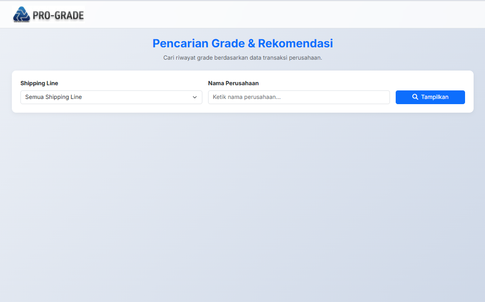
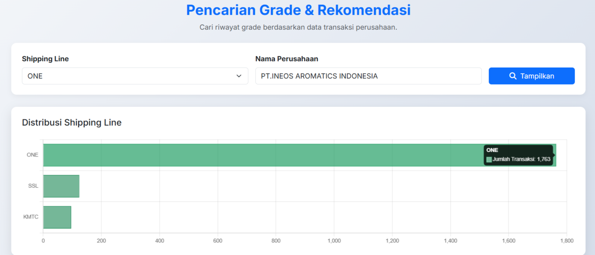
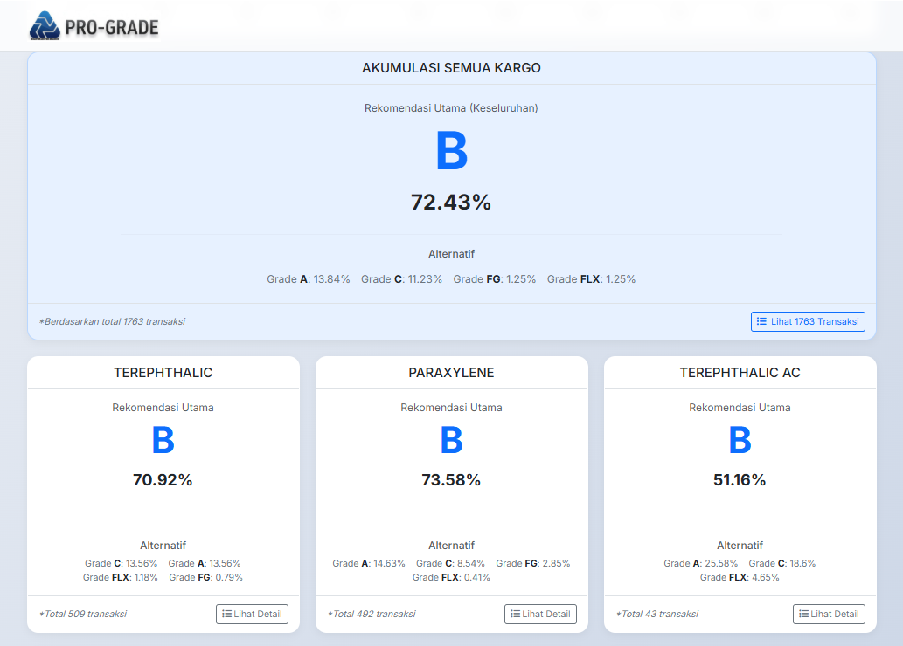

Berikut adalah rincian fungsionalitas sistem yang dibangun, mulai dari pengelolaan database inti, antarmuka pengguna untuk interaksi data, hingga hasil akhir berupa dasbor analitik.

Tabel master data ini berfungsi sebagai tulang punggung (backbone) dari keseluruhan sistem. Data pelanggan, kriteria komoditas, dan relasi parameter disimpan secara terstruktur di sini untuk memastikan penarikan data berjalan akurat tanpa redundansi.

Desain antarmuka dirancang seringkas mungkin agar operator lapangan dapat melakukan pencarian data transaksi secara cepat. Dilengkapi dengan filter dinamis dan kolom pencarian otomatis untuk meminimalisir kesalahan input.


Sistem menghasilkan dasbor analitik yang merangkum rekomendasi utama dan grade alternatif. Dasbor ini memisahkan data berdasarkan akumulasi total dan per kategori komoditas, memberikan *insight* langsung yang sangat berguna bagi manajemen operasional.